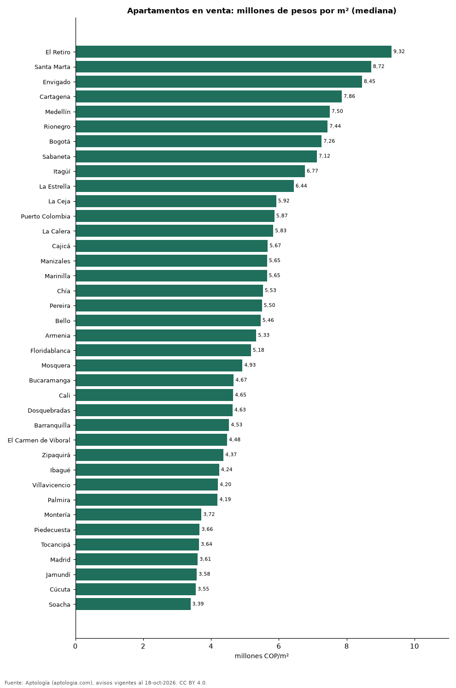

Precio del metro cuadrado de apartamentos en venta en 38 ciudades de Colombia (octubre 2026)
Estudio con datos abiertos (CC BY 4.0). Versión original: https://github.com/elbroker/aptologia-datos/tree/main/estudios/precio-m2-apartamentos-venta-ciudades-colombia-2026 · DOI: 10.5281/zenodo.23460746
El metro cuadrado de apartamento más caro de Colombia se pide en El Retiro: 9,32 millones de pesos en la mediana; el más barato de la muestra, en Soacha, con 3,39 millones de pesos. Bogotá ocupa el puesto 7 de 38 con 7,26 millones de pesos por m².
Resumen: analizamos 120.331 apartamentos en venta con área declarada en 38 ciudades y municipios colombianos.
Actualizado: 18 de octubre de 2026 (datos del 18 de octubre de 2026) · Próxima actualización: mensual.

Resumen
| Indicador | Valor |
|---|---|
| Más caro | El Retiro: 9,32 millones de pesos/m² |
| Más barato | Soacha: 3,39 millones de pesos/m² |
| Bogotá | 7,26 millones de pesos/m² (puesto 7) |
| Ciudades | 38 |
Ranking de ciudades (30 avisos o más)
| Ciudad | Pesos por m² (mediana) | Avisos con área |
|---|---|---|
| El Retiro | 9.321.839 | 618 |
| Santa Marta | 8.720.930 | 3.779 |
| Envigado | 8.452.381 | 5.735 |
| Cartagena | 7.857.143 | 5.774 |
| Medellín | 7.500.000 | 20.515 |
| Rionegro | 7.437.500 | 3.023 |
| Bogotá | 7.261.905 | 31.265 |
| Sabaneta | 7.121.212 | 4.375 |
| Itagüí | 6.766.968 | 2.012 |
| La Estrella | 6.438.356 | 561 |
| La Ceja | 5.922.147 | 312 |
| Puerto Colombia | 5.867.102 | 144 |
| La Calera | 5.833.333 | 139 |
| Cajicá | 5.671.642 | 1.517 |
| Manizales | 5.653.956 | 2.788 |
| Marinilla | 5.649.750 | 164 |
| Chía | 5.529.412 | 1.507 |
| Pereira | 5.500.000 | 4.376 |
| Bello | 5.461.538 | 2.319 |
| Armenia | 5.332.556 | 2.278 |
| Floridablanca | 5.176.224 | 919 |
| Mosquera | 4.926.471 | 817 |
| Bucaramanga | 4.666.667 | 2.439 |
| Cali | 4.650.000 | 9.365 |
| Dosquebradas | 4.634.146 | 607 |
| Barranquilla | 4.531.707 | 7.532 |
| El Carmen de Viboral | 4.475.422 | 90 |
| Zipaquirá | 4.366.197 | 819 |
| Ibagué | 4.239.130 | 1.217 |
| Villavicencio | 4.203.958 | 347 |
| Palmira | 4.194.668 | 112 |
| Montería | 3.718.519 | 288 |
| Piedecuesta | 3.664.236 | 246 |
| Tocancipá | 3.644.068 | 264 |
| Madrid | 3.607.843 | 475 |
| Jamundí | 3.582.207 | 466 |
| Cúcuta | 3.551.857 | 561 |
| Soacha | 3.393.617 | 566 |
Precio pedido mediano por metro cuadrado de apartamentos en venta.
Preguntas frecuentes
¿Cuál es la ciudad con el metro cuadrado más caro de Colombia? El Retiro, con una mediana de 9.321.839 pesos por m² en apartamentos en venta (octubre de 2026).
¿Cuánto vale el metro cuadrado en Bogotá? 7.261.905 pesos en la mediana de apartamentos en venta.
¿Dónde es más barato el metro cuadrado en Colombia? Entre las ciudades con 30 avisos o más, en Soacha: 3.393.617 pesos.
Metodología
- Fuente: exportes nocturnos de la base de datos de Aptología (aptologia.com) del 18 de octubre de 2026: avisos vigentes de vivienda en portales inmobiliarios de 13 países, recogidos por Aptología y vistos en línea entre el 11 y el 18 de octubre de 2026. Corte: 18 de octubre de 2026.
- Depuración: se eliminan duplicados exactos (misma ciudad, zona, tipo, precio, moneda, área, habitaciones y baños) y los precios fuera del percentil 1–99 de cada país, operación, moneda y tipo; el precio por m² usa solo avisos con área declarada entre 12 y 2.000 m² y también se recorta al P1–P99.
- Qué se mide: precios pedidos (publicados), no precios de cierre. En arriendo, el canon mensual sin administración, gastos comunes ni condominio.
- Muestra mínima: cada cifra publicada se apoya en al menos 30 avisos; las celdas con menos se omiten.
- Colombia: Precios en pesos colombianos, sin conversión de moneda. Los indicadores de amoblado, mascotas, conjunto cerrado, balcón y aviso directo del dueño solo existen en arriendo y vienen de los portales.
- Limitaciones: la cobertura depende de los portales que recorre Aptología en cada país y es mayor en las ciudades grandes y en los segmentos medio-alto y alto; el área es la que declara el aviso, sin verificar; los nombres de zona vienen de los portales.
- Privacidad: solo se publican agregados; no se publica ningún dato personal, enlace a avisos ni nombre de anunciante.
- Datos abiertos: datos.csv, licencia CC BY 4.0.
Cómo citar
Pinzón Pineda, D. M. (2026). Precio del metro cuadrado de apartamentos en venta en 38 ciudades de Colombia (octubre 2026). Aptología (aptologia.com). https://github.com/elbroker/aptologia-datos/tree/main/estudios/precio-m2-apartamentos-venta-ciudades-colombia-2026. Datos: datos.csv, licencia CC BY 4.0.